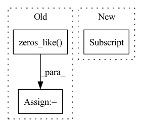

Pattern ID :915

Before Change
// Create target for events spotting and ball position (local and global)
batch_size = pred_ball_global.size(0)
target_ball_global = torch.zeros_like(pred_ball_global)
target_ball_local = torch.zeros_like(pred_ball_global)
target_events = torch.zeros((batch_size, 2), device=self.device)
for idx in range(batch_size):
target_ball_global[idx] = create_target_ball(global_ball_pos_xy[idx], sigma=1., w=self.w, h=self.h, thresh_mask=0.01, device=self.device)
target_ball_local[idx] = create_target_ball(local_ball_pos_xy[idx], sigma=1., w=self.w, h=self.h, thresh_mask=0.01, device=self.device)
After Change
log_vars_idx += 1
target_events = torch.zeros((batch_size, 2), device=self.device)
for sample_idx in range(batch_size):
target_events[sample_idx] = create_target_events(event_class[sample_idx], device=self.device)
event_loss = self.event_loss_criterion(pred_events, target_events)
total_loss += event_loss / (torch.exp(self.log_vars[log_vars_idx])) + self.log_vars[log_vars_idx]
In pattern: SUPERPATTERN
Frequency: 3
Non-data size: 3
Instances
Fragment ID: 2829289
Project Name: maudzung/ttnet-real-time-analysis-system-for-table-tennis-pytorch
Commit Name: 4e2a9eb758dbd4cdd39420a237e25ba581182193
Time: 2020-06-01
Author: nguyenmaudung93.kstn@gmail.com
File Name: src/models/multi_task_learning_model.py
M Class Name: Multi_Task_Learning_Model
N Class Name: Multi_Task_Learning_Model
M Method Name: forward(7)
N Method Name: forward(7)
M Parent Class: nn.Module
N Parent Class: nn.Module
M File Name: src/models/multi_task_learning_model.py
N File Name: src/models/multi_task_learning_model.py
M Start Line: 38
M End Line: 53
N Start Line: 34
N End Line: 71
'>
Before Change
self.emb = self.dropout(self.emb)
count = np.arange(x.shape[0]) + 1
self.c_t = torch.zeros_like(self.emb) // shape=(seq_len, batch_size, day_dim)
for i, att_timesteps in enumerate(count):
// 按时间步迭代，计算每个时间步的经attention的gru输出
self.c_t[i] = self.attentionStep(first_h_a, first_h_b, att_timesteps)
After Change
for cur_time in range(time_steps):
cur_x = x[:, : cur_time + 1, :]
out[:, cur_time, :] = self.retain_encoder(cur_x)
return out
'>
Fragment ID: 2829288
Project Name: yhzhu99/covid-ehr-benchmarks
Commit Name: b3d4ba85ad8e8cfeb3e45e07e5fadfa3fd4a25fa
Time: 2022-06-25
Author: yhzhu99@gmail.com
File Name: app/models/backbones/retain.py
M Class Name: RETAIN
N Class Name: RETAIN
M Method Name: forward(2)
N Method Name: forward(2)
M Parent Class: nn.Module
N Parent Class: nn.Module
M File Name: app/models/backbones/retain.py
N File Name: app/models/backbones/retain.py
M Start Line: 64
M End Line: 83
N Start Line: 44
N End Line: 53
'>
Before Change
dists = cdist(anchor, positive, metric=self.metric)
// add 10 to false negative
dist_keypts = np.eye(dist_keypts.shape[0]) * 10 + dist_keypts.detach().cpu().numpy()
add_matrix = torch.zeros_like(dists)
add_matrix[np.where(dist_keypts < self.safe_radius)] += 10
dists = dists + add_matrix
pos_mask = torch.eq(torch.unsqueeze(pids, dim=1), torch.unsqueeze(pids, dim=0))
After Change
// pos = dists + 1e5 * (~pos_mask).float()
pos = furthest_positive[:, None]
pos_weight = (self.pos_optimal - pos).detach()
pos_weight = torch.max(torch.zeros_like(pos_weight), pos_weight)
lse_positive = torch.logsumexp(-self.log_scale * (pos - self.pos_margin) * pos_weight, dim=-1)
'>
Fragment ID: 2829299
Project Name: xuyangbai/d3feat.pytorch
Commit Name: f19b93196387b22f1cb416f9a0214b2cffaf8e5e
Time: 2020-07-16
Author: 653823597@qq.com
File Name: utils/loss.py
M Class Name: CircleLoss
N Class Name: CircleLoss
M Method Name: forward(4)
N Method Name: forward(4)
M Parent Class: nn.Module
N Parent Class: nn.Module
M File Name: utils/loss.py
N File Name: utils/loss.py
M Start Line: 123
M End Line: 152
N Start Line: 125
N End Line: 157